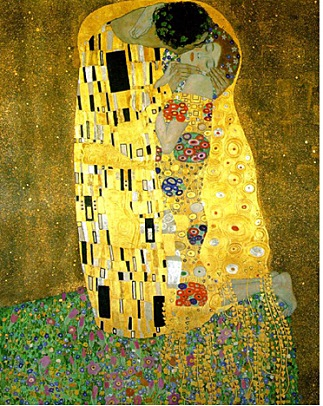

이벤트
1. 이벤트의 종류
- 마우스 이벤트 / 키보드 이벤트 / Element 이벤트 / 사용자 이벤트
2. 이벤트 단계
2-1. capturing
2-2. Targeting
2-3. Bubbling
3. 이벤트 함수
- $(대상).on('이벤트 종류', 함수 );
http://api.jquery.com/on/
4. 이벤트 이름
- blur : 포커스를 잃었을 때
http://api.jquery.com/blur/
- click : 마우스를 클릭했을 때
http://api.jquery.com/click/
- focusin / focusout : 포커스를 얻었을 때 / 잃었을 떄
http://api.jquery.com/focusin/
http://api.jquery.com/focusout/
- keydown / keyup : 키보드를 눌렀을 때 / 떼 었을 때
http://api.jquery.com/keydown/
http://api.jquery.com/keyup/
- mousedown /mouseup : 마우스 버튼 눌렀을 때 / 떼 었을 때
http://api.jquery.com/mousedown/
http://api.jquery.com/mouseup/
- mouseenter / mouseleave : 마우스 커서가 닿았을 때 / 떨어졌을 때 (bubbling 발생하지 않음)
http://api.jquery.com/mouseenter/
http://api.jquery.com/mouseleave/
- mouseover / mouseout : 마우스 커서가 닿았을 때 / 떨어졌을 때 (bubbling 발생함 : bubbling 이 생기면 안좋다고 함 한번 알아보자)
http://api.jquery.com/mouseover/
http://api.jquery.com/mouseout/
- resize : 브라우저 크기가 변경 될 때 ( window객체 에만 사용 가능한 함수 "$( window ).resize(function() {")
http://api.jquery.com/resize/
- scroll : 스크롤 될 때 ( 웹 페이지 전체 스크롤 - window 객체 사용 )
http://api.jquery.com/scroll/
- load / unload : 대상이 로딩 되었을 때 / 제거 되었을 때 ( 이미지가 모두 로딩된 이후에 코드가 실행되게 할 때 주로 사용)
http://api.jquery.com/load-event/
http://api.jquery.com/unload/
- select : 텍스트를 마우스로 드래그 해서 선택했을 때
http://api.jquery.com/select/